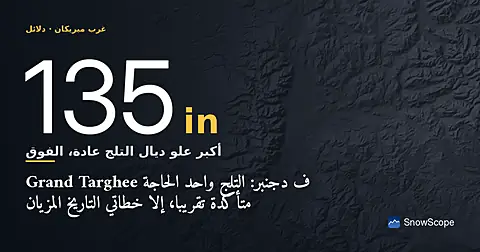
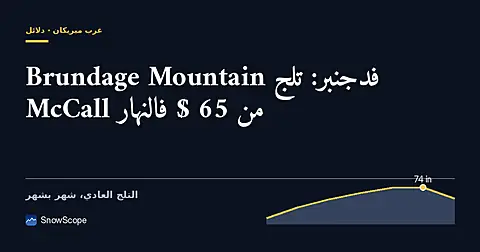

أرخص محطات التزحلق فأمريكا اللي فيهم التلج مضمون ف دجنبر 2026: مقارنة بين 16
التلج الجديد فـ ديسمبر الأول هو قمار تقريبا فـ كل المحطات الأمريكية، ولكن الاحتمالات تتحسن بزاف كيما يتقدم الشهر. صنفنا 16 محطة ديال الميزانية الخفيفة حسب السجل ديالهم الحقيقي فـ دجنبر—النسبة ديال الشتوات اللي فاتو 46 ديالهم لي فيها 50 سم فـ الأقل من الجهة الفوقانية يوم 15 دجنبر—ومطبقنا كل واحد مع ثمن التذكرة ديال اليوم الكامل للراشدين لـ حالا.
شوف توقعات التلج مباشرة ديال US West فالتطبيق ديال SnowScopeالعلو ديال التلج، التنبيهات والخريطة 3D، فابور.شنو المحطات لي فيها أحسن الاحتمالات فـ دجنبر
Grand Targhee (Wyoming) هي الزعيمة بلا نقاش: كانت تحتفظ بـ 50 سم أو أكثر فـ الأقل من الجهة الفوقانية يوم 15 دجنبر فـ كل واحد من الشتوات اللي فاتو 46. Mt. Baker (Washington) فـ المرتبة الثانية بـ 93%، بعدها Brighton (Utah) بـ 89%. ستة محطات مربوطة بـ 87%: White Pass و Snow King (الاثنين فـ ولايات الجبال)، Brundage و Lookout Pass (Idaho)، زيد Montana Snowbowl و Schweitzer (كاين كاين فـ Idaho).
النص الثاني فيه Timberline (Oregon) بـ 78%، Wolf Creek (Colorado) بـ 72%، Ski Cooper (Colorado) بـ 70%، Loveland (Colorado) بـ 67%، Beaver Mountain (Utah) بـ 57%، و Bridger Bowl (Montana) بـ 50%.

خمسة محطات لي تجمع بين الثمن والموثوقية
إذا كنت تقلب احتمالات فوق 80% و ثمن التذكرة أقل من 80 دولار كل يوم، خمسة منتجعات فـ الحال. Brundage عندها 87% احتمال و تبدأ بـ 65 دولار فـ الأيام المختارة (الأثمان تتعلى كيما تقرب تاريخ الزيارة). White Pass كاين بـ 87% وتبدأ بـ 69 دولار أونلاين فـ الاثنين إلى الخميس برا العطل. Lookout Pass توصل إلى 85% احتمال و تكلف 63 دولار إذا حجزت يوم فـ المنتصف قبل.
احتمالات Brighton 89% توليفة مع ثمن شروع 72 دولار كيما تشري بوقت. Montana Snowbowl رفقة Brundage بـ 87% فـ السجل و تتحمل 78 دولار فـ أيام الشغل. الحاجة المفتاح فـ الخمسة ديالهم: خصص الاثنين إلى الخميس و احجز كيما تتفتح التواريخ.
الرهانات الأكثر وثوقية تكلف أكثر
السجل ديال 100% دجنبر ديال Grand Targhee ما يجي برخص. التذاكر أونلاين هناك تتراوح ما بين 125 و 180 دولار حسب التاريخ. Mt. Baker، بـ 93% احتمال، تبيع التذاكر ديال اليوم فقط فـ الشباك: 98.80 دولار فـ الأيام الخافتة (الاثنين إلى الخميس برا العطل) و 115.42 دولار فـ أيام الذروة، لا واحد من الأثمان ما فيه التاكس.
Snow King (Wyoming) تبدأ بـ 100 دولار و تجيب 87% احتمال. Timberline فيها المرونة: اليوم الكامل ديالها برا الذروة هو 129 دولار أو تذكرة ما بعد الزوال (من 12) هي 96 دولار. 3-Pack ديال Schweitzer ديال 3 أيام بـ 249 دولار يطلع 83 دولار كل يوم.
الخصومات العميقة جاية مع أقل التأكيد فـ بداية الشهر
أخفض أثمان التذاكر نتاع المحطات لي فيها التلج فـ نص دجنبر ما متأكد. Ski Cooper تتحمل غير 49 دولار فـ أيام الشغل (87% احتمال على تقسيم أيام الشغل إلى الويكند، لكن غير 70% احتمال يوم 15 دجنبر نفسو). Loveland تبيع التذاكر بـ 60 دولار أونلاين لحد 13 دجنبر، بعدها تقفز لـ 159 دولار. Sunlight تبدأ بـ 74 دولار، Beaver Mountain ثابتة 75 دولار، Bridger Bowl 86 دولار أونلاين، و Wolf Creek 96 دولار فـ الأيام النوموية.
هذو المحطات تصير أكثر أمان كيما يتقدم دجنبر. الاحتمالية ديال التلج الكويس تتعلى من أسبوع إلى أسبوع: بحال 21-27 دجنبر، Ski Cooper توصل إلى 96% احتمال، Bridger Bowl 78%، و Beaver Mountain 76%. إذا كانت تواريخك تقدر تتبدل، الانتظار لـ الأسبوع الثالث يفك لك احتمالات التلج الكويس و أثمان رخيصة بزاف.
شنو تقصد الأرقام ديالك
هذو النسب دالة 46 شتاء من 1980-81 إلى 2025-26. هوما جاوبات على سؤال واحد: شحال مرة كانت كل محطة تحتفظ بـ 50 سم أو أكثر فـ الأقل من الجهة الفوقانية يوم 15 دجنبر؟ العلو النوموي ديال الأقل من الجهة الفوقانية فـ ذاك التاريخ تاخد من 51 سم فـ Bridger Bowl لـ 118 سم فـ Grand Targhee و 132 سم فـ Timberline.
الأثمان اتفتشو على الصفحة الرسمية ديال كل منتجع فـ 13 نونبر 2026. الأثمان ديناميكية يعني الأثمان ديال 'من' تتعلى كيما تتباع التواريخ. التلج الجديد رقيق وقد تخبي الحجارة؛ شوف الخريطة ديال التلج شي نهار قبل ما تروح.
كيفاش دير احسن صفقة ليك حسب تواريخك
إذا كنت تقدر تتزلج فـ الأسبوع الثاني أو الثالث ديال دجنبر، اختار الاثنين إلى الخميس و احجز أونلاين كيما تتفتح التواريخ. تحيد الزيادة ديال الويكند و فترة العطل ديال الذروة، و السجل يوريك احتمالات كويسة عند معظم هذو المحطات. مثلا، Ski Cooper بـ 70% احتمال يوم 15 دجنبر يقفز إلى 93% احتمال للأسبوع من 14-20 دجنبر و 96% للـ 21-27 دجنبر.
إذا ديسمبر الأول هو الشي الوحيد ديالك، بقا مع النص الأول ديال الترتيب. Grand Targhee، Mt. Baker، و Brighton كايين الكل بـ فوق 85% احتمال من 1 دجنبر لـ قدام. جيب الصبر، شوف الحالة قبل ما تسوق، و تذكر: التقويم هو أرخص تذكرة ديالك.
نصايح للي كيتزلجو
- احجز رحلة ليك يوم ديال الشغل فـ الأسبوع الثاني أو الثالث ديال دجنبر: الاحتمالات ديال التلج عالية، الأثمان ديال الويكند متحاديين، و كنت تحيد الزيادة ديال العطل ديال الذروة.
- استعمل الأثمان الديناميكية لـ لحاح ديالك: كيما منتجع واحد توريك سعر 'من'، احجز كيما تتفتح التقويمة؛ الأثمان فقط تطلع.
- إذا كنت مجبور تتزلج ديسمبر الأول، اختار المحطات من النص الأول ديال الترتيب (فوق 85% احتمال): Grand Targhee، Mt. Baker، Brighton، White Pass، Snow King، Brundage، Lookout Pass، و Schweitzer.
- دجنبر الأخير أكثر أمان للمحطات ديال الميزانية فـ النص الثاني. بحال أسبوع العيد، Ski Cooper، Bridger Bowl، و Beaver Mountain كايين الكل توصل 76-96% احتمال؛ شوف الخريطة ديال التلج شي نهار قبل ما تروح.
- شوف النشرة الرسمية ديال الانهيارات قبل ما تتزلج برا البيستات.
على هاد الأرقام
العلو ديال التلج فالمحطات هو أكثر تلج فالجهة الفوقانية فالتاريخ المكتوب؛ هادو تقديرات لمنطقة، ماشي قياس فنقطة وحدة. التوقعات يمكن تتبدل. ديما شوف النشرة الرسمية ديال الانهيارات قبل ما تخرج من البيست.
كيفاش تستاشهد بهاد المقال
للبحث، التعليم ولا الصحافة: الأرقام والرسومات تقدر تعاود تخدم بيهم بحرية تحت CC BY 4.0 مع هاد الاستشهاد.
SnowScope (2026), أرخص محطات التزحلق فأمريكا اللي فيهم التلج مضمون ف دجنبر 2026: مقارنة بين 16, https://snowscope.app/blog/ar/2026/11/cheapest-snow-sure-us-ski-areas-december-2026.html, تشاف ف 2026-11-14
SnowScope (Atlas Labs). (2026, November 14). أرخص محطات التزحلق فأمريكا اللي فيهم التلج مضمون ف دجنبر 2026: مقارنة بين 16. SnowScope snow reports. https://snowscope.app/blog/ar/2026/11/cheapest-snow-sure-us-ski-areas-december-2026.html
BibTeX
@misc{snowscope2026cheapestsnowsureusskiare,
author = {{SnowScope (Atlas Labs)}},
title = {أرخص محطات التزحلق فأمريكا اللي فيهم التلج مضمون ف دجنبر 2026: مقارنة بين 16},
year = {2026},
month = nov,
howpublished = {\url{https://snowscope.app/blog/ar/2026/11/cheapest-snow-sure-us-ski-areas-december-2026.html}},
note = {Published 2026-11-14 14:47 UTC; accessed 2026-11-14}
}· CC BY 4.0 · الطريقة، الداتا والأدوات →
تابع US West
فابور: ميساج ملي يجي التلج، والتوقعات كل صباح.
تقارير أخرى ديال التلج

Grand Targhee كتحتفظ بالتلج الموثوق فـ دجنبر فـ كل الارتفاعات. فـ وسط الجبل، 46 سم (118 سم) هادا نورمال بحال 15 دجنبر، و100% ديال الشتوات كتوصل ل 20 سم (50 سم) أو أكثر. المعطيات من 13 نونبر 2026.

Brundage Mountain كتعطي تلج موثوق فـ أول الموسم بقرب McCall، إيداهو. العلو ديال التلج فـ منتصف الجبل كيوصل لـ 30 إنش (77 سم) بحوالي منتصف ديسمبر، والبطاقات كتابدا من 65 دولار فـ أيام معينة.

المحطة ديال Brighton فـ نص الجبل عندها عادة 94 سم فـ 15 ديسمبر. المعطيات من 13 نونبر 2026.